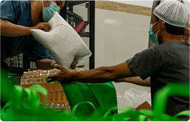
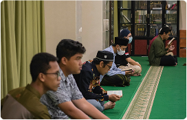

Temukan kedamaian melalui dekat dengan Tuhan
Masjid bukan hanya sebagai tempat ibadah yang nyaman, tapi juga jadi tempat berbagai kegiatan, memupuk persaudaraan hingga membangkitkan perekonomian, atau tempat apapun yang berkaitan dengan keumatan.
Fitur
Semua Kenyamanan dalam Satu Masjid
Imam Hafidz Qur'an dan Menguasai Berbagai Nagham
Masjid Dilengkapi AC, Memastikan Ruangan Sejuk
Masjid Terbuka 24 Jam dengan Jaminan Keamanan
Menggunakan Karpet Terbaik yang Lembut Dipakai Sujud
Kegiatan
Berbagai Kegiatan Menarik Yang Tersedia di Masjid
Sembako Gratis dan Santunan Terhadap Dhuafa
Tersedia paket sembako gratis dan juga rutin melaksanakan kegiatan santunan terhadap dhuafa.
Pendidikan dan Pelatihan Kewirausahaan
Masjid rutin membina jama'ah di segala usia agar memiliki keterampilan dan minat belajar yang tinggi demi masa depan yang cerah.
Kajian Fiqih, Kajian Ibadah 4 Madzhab dan Belajar Ngaji
Di setiap harinya, masjid akan melaksanakan banyak kegiatan keislaman, terbuka untuk masyarakat sekitar dan untuk umum.
